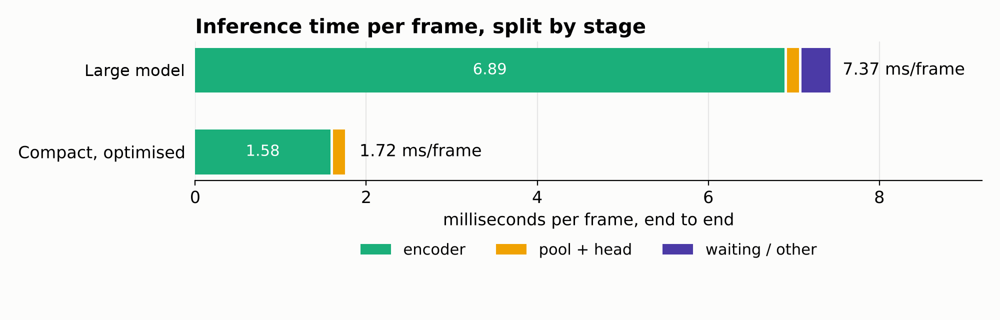
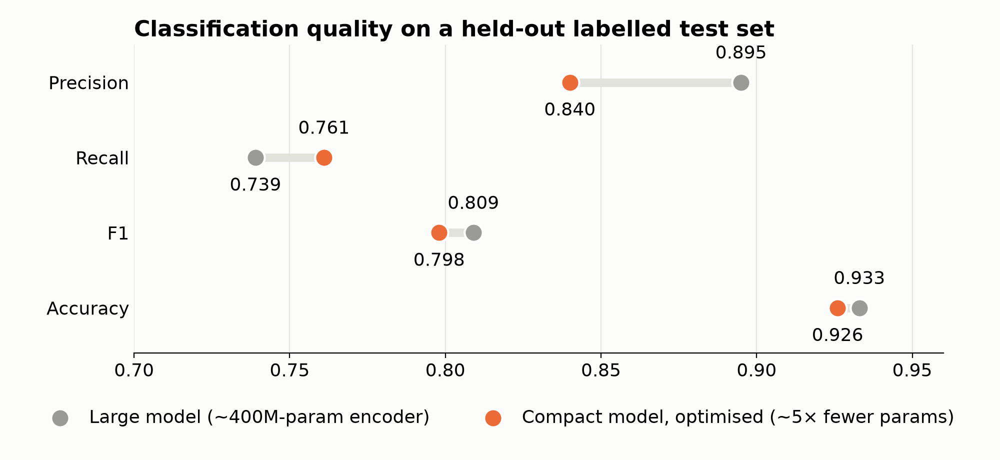

A two-month freelance contract to deliver a per-frame classification model. The existing pipeline wasn't a usable starting point, so I built it from scratch: a hand-labelled test set, knowledge distillation from a prompted teacher model, region pooling in place of whole-frame mean pooling, a large model reaching 0.895 precision, and a compact version with a ~5× smaller encoder that runs 4.3× faster while holding 0.840 precision.
The task was a model that classifies every frame of a video stream. There was an existing pipeline, but it had never been evaluated and wasn't something I could build on, so rather than patch it I started from scratch. The details of the client's data and use case are under NDA, so this page sticks to the numbers.
Before, each frame's encoder features were mean-pooled over the whole image into one vector. That treats every part of the frame as equally informative, so the few regions that actually carry the signal get averaged together with everything else. After studying the problem, I found that the characteristics the model has to detect show up much more often in specific regions of the frame. Pooling features over those regions instead keeps the informative parts from being diluted by the rest, and it was the change that improved the metrics the most.

With the large model working, the encoder was the bottleneck at 6.89 ms of the 7.37 ms frame. The smaller encoder brought that down to 1.58 ms. The pool + head cost stayed about the same. The waiting overhead disappeared because I overlapped frame preparation with GPU compute, so the GPU is never idle between frames. Together that gives a 4.3× end-to-end speed-up.

| Metric | Large model | Compact, optimised | Change |
|---|---|---|---|
| Accuracy | 0.933 | 0.926 | −0.007 |
| F1 | 0.809 | 0.798 | −0.011 |
| Recall | 0.739 | 0.761 | +0.022 |
| Precision | 0.895 | 0.840 | −0.055 |
Accuracy and F1 land within about a point of the large model, and recall goes up, so the compact model misses fewer positives. The cost is 5.5 points of precision. For a model running on every frame, a 4.3× cheaper pass was worth that trade, and the decision threshold can be tuned to recover precision if the use case calls for it.
The engagement was scoped as a two-month contract. I handed over the labelled test set, the compact model, the optimised inference path, and the evaluation above.